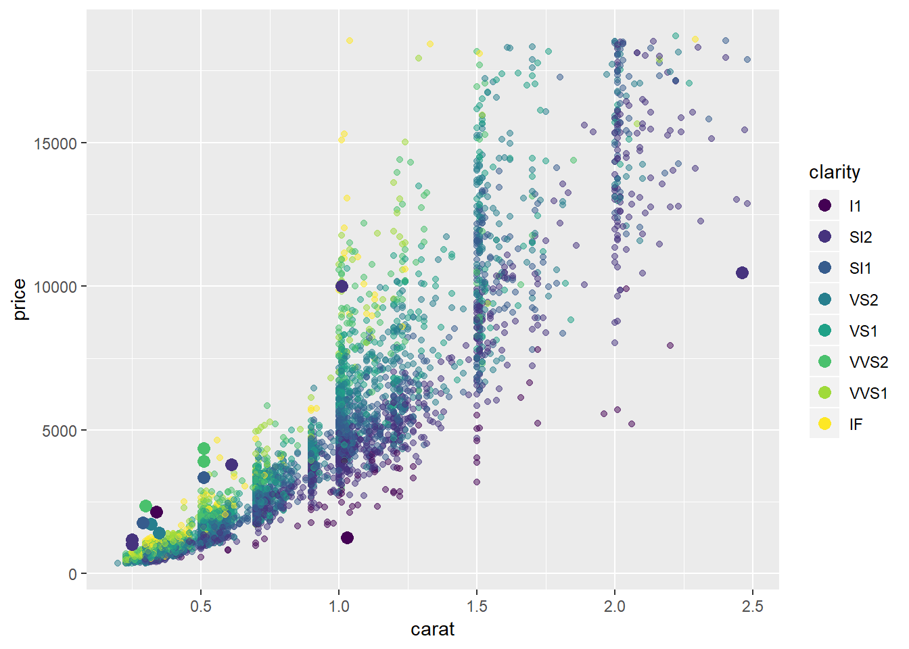
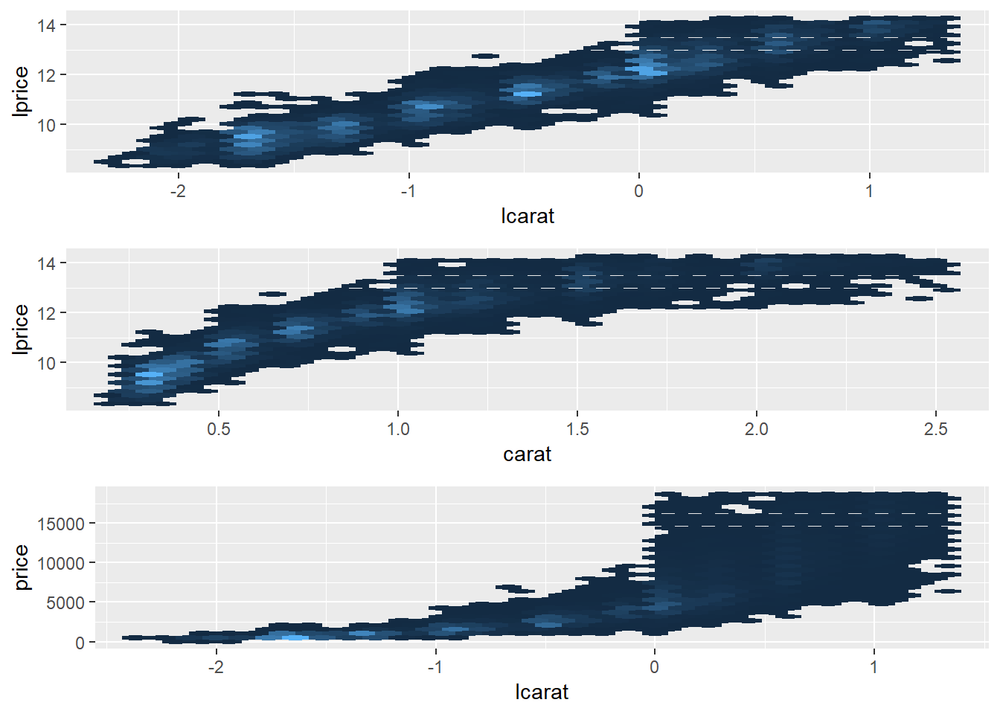
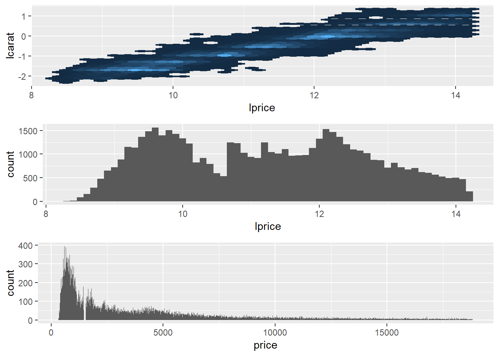
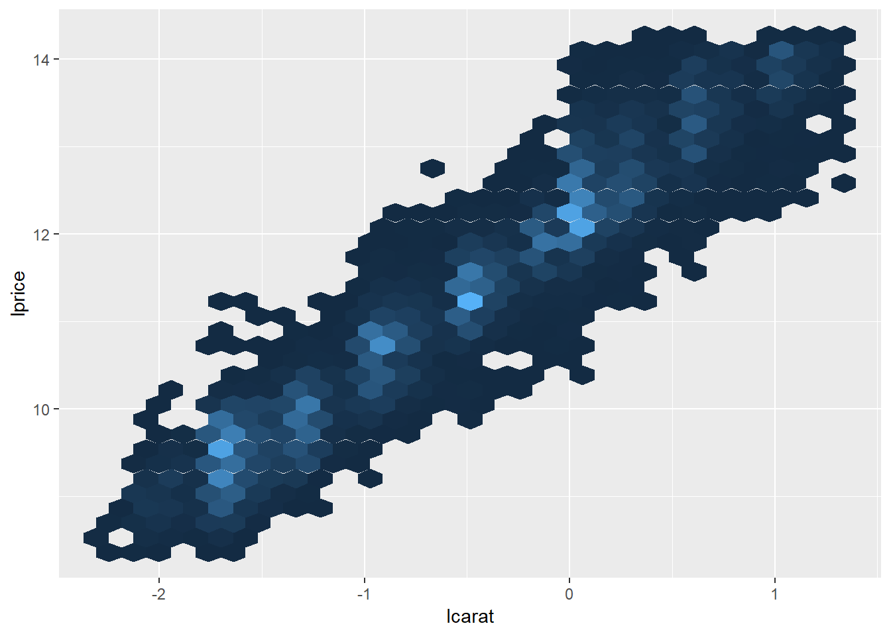
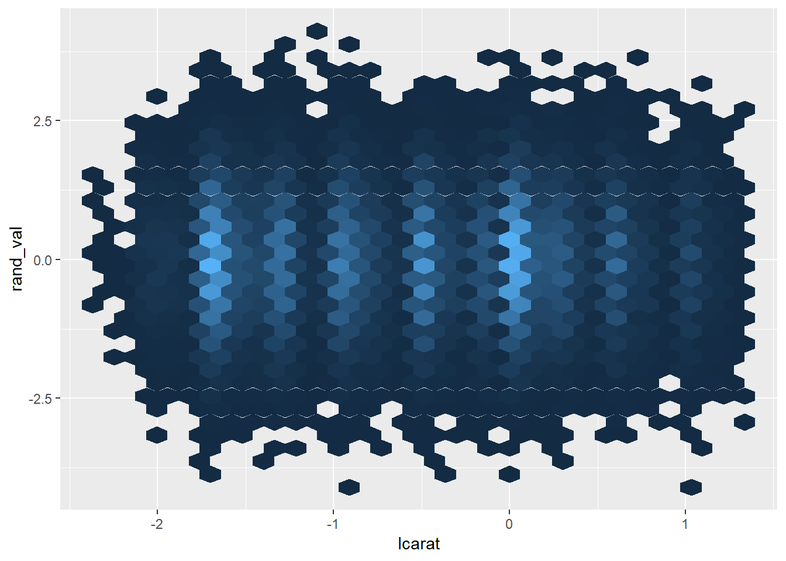
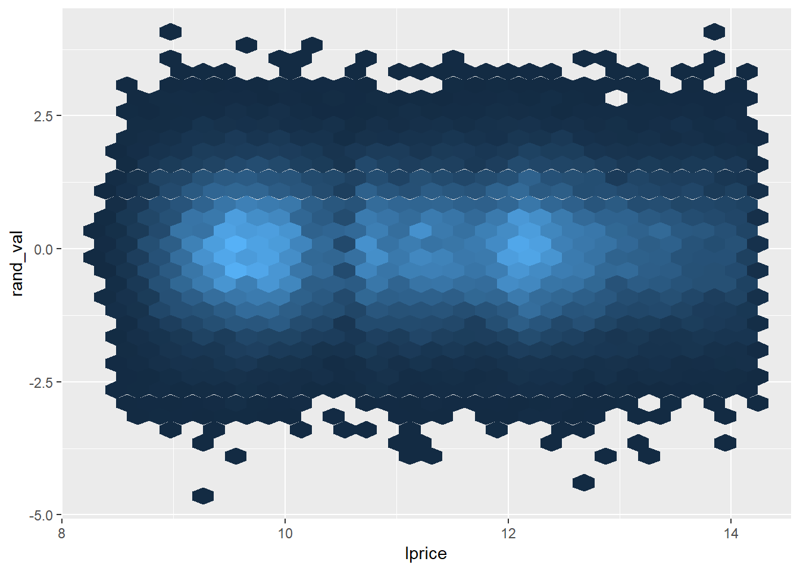
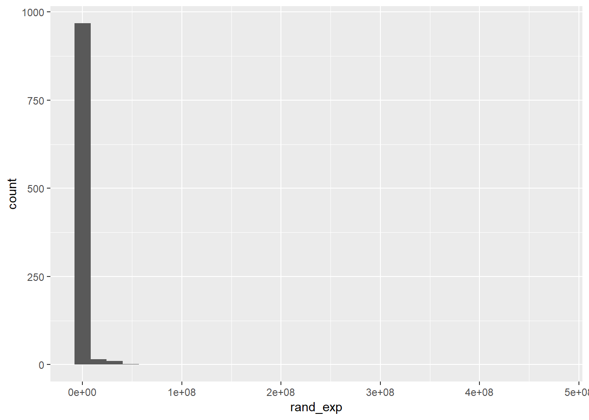
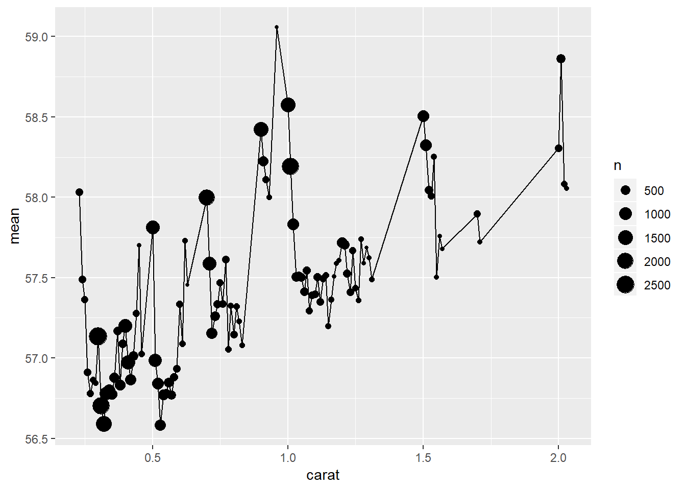
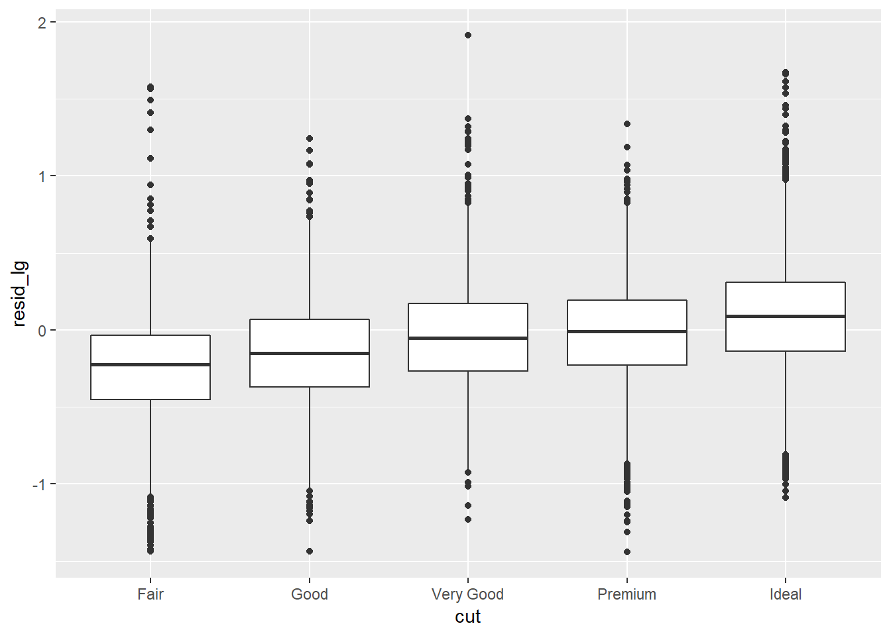
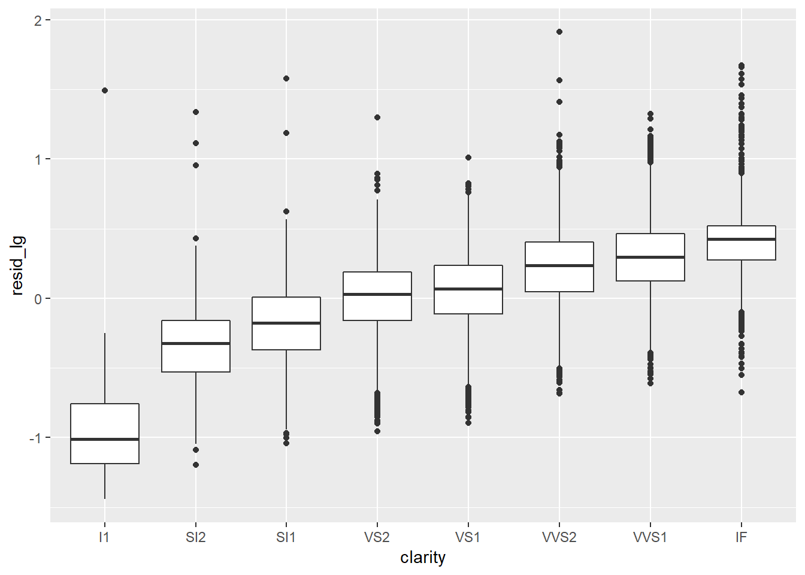

Chapter 30 Appendix
30.1 24.2.3.3
Plots of extreme values against a sample and colored by some of the key attributes
Plots of extreme values against carat, price, clarity
diamonds2 %>%
add_predictions(mod_diamond2) %>%
sample_n(5000) %>%
ggplot(aes(carat, price))+
geom_point(aes(carat, price, colour = clarity), alpha = 0.5)+
geom_point(aes(carat, price, colour = clarity), data = extreme_vals, size = 3)
Plots of extreme values against carat, price, cut
diamonds2 %>%
add_predictions(mod_diamond2) %>%
sample_n(5000) %>%
ggplot(aes(carat, price))+
# geom_hex(bins = 50)+
geom_point(aes(carat, price, colour = cut), alpha = 0.5)+
geom_point(aes(carat, price, colour = cut), data = extreme_vals, size = 3)
30.2 24.2.3.4
30.2.1 heteroskedasticity
Note that heteroskedasticity is one (of several other) important considerations that would be important when deciding how much you trust the model.
residual vs lprice

- the log transformation helped to ensure our residuals did not have heteroskedasticity against the predictor
residual (transformed) vs price
(resid_transformed represents the residual against the residual after transforming it from a prediction for log2(price) to a prediction for price)
diamonds2 %>%
add_predictions(mod_diamond2) %>%
mutate(resid_transformed = price - 2^(pred)) %>%
ggplot(aes(price, resid_transformed))+
geom_hex()
- This is what heteroskedasticity looks like
residual (transformed) vs log price
(resid_transformed represents the residual against the residual after transforming it from a prediction for log2(price) to a prediction for price)
# resid v lprice (% change on x resid)
diamonds2 %>%
add_predictions(mod_diamond2) %>%
mutate(resid_transformed = price - 2^(pred)) %>%
ggplot(aes(lprice, resid_transformed))+
geom_hex()
30.2.2 rsquared on logged values
(incorrect)
This is what I did initially. Below I calculate the R^2 on the log values. Within the exercise solution I decided to report the R^2 when calculated on 2^pred. This has the more useful interpretation of representing the percentage of the variance on the actual price that the model captures, which seems more appropriate in some ways. This question about which is more appropriate to report may be worth revisiting in the future.
#to see if I'm doing it right let's calculate the R_squared of the model using this technique
ss_res <- diamonds2 %>%
add_predictions(mod_diamond2) %>%
mutate(extreme_value = (abs(resid_lg) > 1),
pred_exp = 2^(pred),
squ_mod = (log2(price) - pred)^2,
squ_error = (log2(price) - mean(log2(price)))^2) %>%
.$squ_mod %>% sum()
ss_tot <- diamonds2 %>%
add_predictions(mod_diamond2) %>%
mutate(extreme_value = (abs(resid_lg) > 1),
pred_exp = 2^(pred),
squ_mod = (log2(price) - pred)^2,
squ_error = (log2(price) - mean(log2(price)))^2) %>%
.$squ_error %>% sum()
# calculated by hand
1 - ss_res / ss_tot## [1] 0.9827876## [1] 0.9827876The R-squred is ~ 0.983, which means that the model accounts for 98.3% of the variance in price, which seems pretty solid.
30.3 24.2.3.1
Visualization with horizontal stripes and lprice as the focus

- same thing, just change orientation and highlight
lpricewith a histogram
A few other graphs from this problem


Taking the log of price seems to have a bigger impact on the shape of the geom_hex graph


30.3.1 More notes on logs
While taking the log of both price and carat seems to help improve the ‘linearity’ of the model, perhaps taking the log of the price makes a bigger difference.
# a few other plots
plot_c <- diamonds2 %>%
ggplot(aes(carat))+
geom_histogram(binwidth = 0.1)
plot_p <- diamonds2 %>%
ggplot(aes(price))+
geom_histogram(binwidth = 10)
plot_c_lp <- diamonds2 %>%
ggplot(aes(carat, lprice))+
geom_hex(show.legend = FALSE)
plot_lc_p <- diamonds2 %>%
ggplot(aes(lcarat, price))+
geom_hex(show.legend = FALSE)
gridExtra::grid.arrange(plot_lc_lp, plot_c_lp, plot_lc_p)
- The reason for this may be that the log of the price better resembles a normal distribution than the log of the carat, though taking the log of the carat does also help by, at the least, centering the distribution…


30.3.2 carat more clumped than price
(Unnecessary)
* let’s see between price and carat, which causes the appearance of “bands” in the data
* to do this let’s look at geom_hex when making the accompanying value random
diamonds2 %>%
mutate(rand_val = rnorm(n())) %>%
ggplot(aes(lcarat, lprice))+
geom_hex(show.legend = FALSE)
diamonds2 %>%
mutate(rand_val = rnorm(n())) %>%
ggplot(aes(lcarat, rand_val))+
geom_hex(show.legend = FALSE)
diamonds2 %>%
mutate(rand_val = rnorm(n())) %>%
ggplot(aes(lprice, rand_val))+
geom_hex(show.legend = FALSE)
- clearly carat are much more clumped
- this check was unnecessary in this case, though the method felt worth saving
30.4 Logs (simulated examples)
30.4.1 Exponential relationship
Taking the log of a value often centers the distribution which is helpful for getting more normal errors, it’s actually not about making the relationship linear per se… but about making the errors normal (and linearlizing the relationship has the effect of doing this). Let’s generate some data.
Review logs on simulated dataset
set.seed(12)
log_notes_df <- tibble(rand_origin = rnorm(1000, mean = 5),
rand_noise = rand_origin + rnorm(1000, mean = 0, sd = 1),
rand_exp = 8^rand_noise,
rand_exp_log = log2(rand_exp))
# exponential distribution
log_notes_df %>%
ggplot(aes(x = rand_exp))+
geom_histogram()
# Then take log base 2 of
# centered at 15 because 8 = 2^3 and it becomes 3*rnorm(mean = 5)
log_notes_df %>%
ggplot(aes(x = rand_exp_log))+
geom_histogram()
# The log helped us to uncover the relationship that existed between the original values and the values after some noise was added and then exponentiated
log_notes_df %>%
ggplot(aes(x = rand_origin, y = rand_exp_log))+
geom_hex()
# coord_fixed()
# for every one unit increase in 'rand_origin' we get a ~3 fold increase in the log of the output
# this corresponds with the relationship being 2^3*1 , i.e. 3 comes from 2^3, and the 1 is because there is a 1 to ~1 relationship
log_notes_df %>%
lm(rand_exp_log ~ rand_origin, data = .)##
## Call:
## lm(formula = rand_exp_log ~ rand_origin, data = .)
##
## Coefficients:
## (Intercept) rand_origin
## 0.246 2.972- because of the properties of logs and exponents, taking the log transform is robust to linearlizing any exponential relationship regardles of log
30.4.2 Log log relationship
What happens if you have a log relationship and you take the log of this leading to a log-log relationship? * You would not need to take the log of a graph in this relationship, but let’s look at what happens
log_notes_df2 <- tibble(rand_origin = rnorm(1000, mean = 256, sd = 20),
rand_noise = rand_origin + rnorm(1000, mean = 0, sd = 10),
rand_log = log2(rand_noise),
rand_log_log = log2(rand_log),
rand_exp = 2^rand_log)
# centered at 8 because 256 = 2^8
log_notes_df2 %>%
ggplot(aes(x = rand_log))+
geom_histogram()


- linear relationship still visually seems to exist
Conceptualizing Linear regression can actually get surprisingly complicated. I’ll pull this into a separate blog post at some point.
30.5 Diamonds data review
(Section arguably unnecessary)
30.5.1 carat by mean table value
table represents the percentage of the max area that is covered by the flat top part of the diamond
diamonds2 %>%
group_by(carat) %>%
summarise(n = n(),
sd = sd(table),
mean = mean(table)) %>%
filter(n > 100) %>%
ggplot(aes(x = carat, y = mean))+
geom_point(aes(size = n))+
geom_line()
30.5.2 Cutoff, Part 1
I get nervous that in the opening example that the diamonds dataset was biased because all values with price over 19000 or carat over 2.5 were removed. This seemed to have the affect of causing larger diamonds to have lower prices than expected. I was worried this might in some way impact the pattern described regarding the residuals across the other dimensions – so looked at the residuals when building the model on just diamonds with carats less than 0.90. None of the prices seemed to approach 19000 for carats this small so this seemed like a good place to validate the discussion on residuals.
The pattern did indeed hold for even just these small diamonds, so the example Hadley discusses seems appropriate.
diamonds2 alternative… say that we only want to look at diamonds with carat less than 0.9
diamonds_test <- diamonds %>%
filter(carat <= 0.9) %>%
mutate_at(vars(price, carat), funs(lg = log2))## Warning: funs() is soft deprecated as of dplyr 0.8.0
## please use list() instead
##
## # Before:
## funs(name = f(.)
##
## # After:
## list(name = ~f(.))
## This warning is displayed once per session.mod_diamond <- diamonds_test %>%
lm(price_lg ~ carat_lg, data = .)
diamonds2_w_mod <- diamonds_test %>%
add_residuals(mod_diamond, "resid_lg")All the patterns Hadley pointed-out seem to hold on this slightly modified dataset



30.5.3 Cutoff, Part 2
Check if there are differences in coefficients when training on full diamonds data set v diamonds2 dataset
mod_diamonds <- diamonds %>%
mutate(lprice = log2(price),
lcarat = log2(carat)) %>%
lm(lprice ~ lcarat, data = .)
mod_diamonds2 <- lm(lprice ~ lcarat, data = diamonds2)
diamonds %>%
mutate(lprice = log2(price),
lcarat = log2(carat)) %>%
spread_predictions(mod_diamonds, mod_diamonds2) %>%
sample_n(1000) %>%
ggplot(aes(x = lcarat, y = lprice))+
geom_point()+
geom_line(aes(y = mod_diamonds), colour = "red")+
geom_line(aes(y = mod_diamonds2), colour = "blue")
essentially no difference between the models that come-out when training on one v the the other
30.6 25.3.5.4
In this section I create a marker for days that are “near a holiday”
near_holidays <- holidays %>%
# This creates a series of helper variables to create the variable 'Holiday_IntervalDay' that represents an interval that encloses the period between the holiday and the beginning or end of the most recent weekend
mutate(HolidayWday = wday(HolidayDate, label = TRUE),
HolidayWknd = lubridate::round_date(HolidayDate, unit = "week"),
HolidayFloor = lubridate::floor_date(HolidayDate, unit = "week"),
HolidayCeiling = lubridate::ceiling_date(HolidayDate, unit = "week"),
Holiday_IntervalDay = case_when(HolidayWknd == HolidayFloor ~ (HolidayFloor - ddays(2)),
TRUE ~ HolidayCeiling)) %>%
mutate(Holiday_Period = interval(pmin(HolidayDate, Holiday_IntervalDay), pmax(HolidayDate, Holiday_IntervalDay)))
# This returns each day and whether it occurred near a holiday
near_holiday <- map(near_holidays$Holiday_Period, ~(seq.Date(ymd("2013-01-01"), ymd("2013-12-31"), by = "day") %within% .x)) %>%
transpose() %>%
map_lgl(any) %>%
as_tibble() %>%
rename(NearHoliday = value) %>%
mutate(date = seq.Date(ymd("2013-01-01"), ymd("2013-12-31"), by = "day"))
near_holiday## # A tibble: 365 x 2
## NearHoliday date
## <lgl> <date>
## 1 TRUE 2013-01-01
## 2 FALSE 2013-01-02
## 3 FALSE 2013-01-03
## 4 FALSE 2013-01-04
## 5 FALSE 2013-01-05
## 6 FALSE 2013-01-06
## 7 FALSE 2013-01-07
## 8 FALSE 2013-01-08
## 9 FALSE 2013-01-09
## 10 FALSE 2013-01-10
## # ... with 355 more rows- I ended-up not adding any additional analysis here, though the methodology for creating the “near holiday” seemed worth saving
- Could come back to add more in the future
Make sure the following packages are installed: